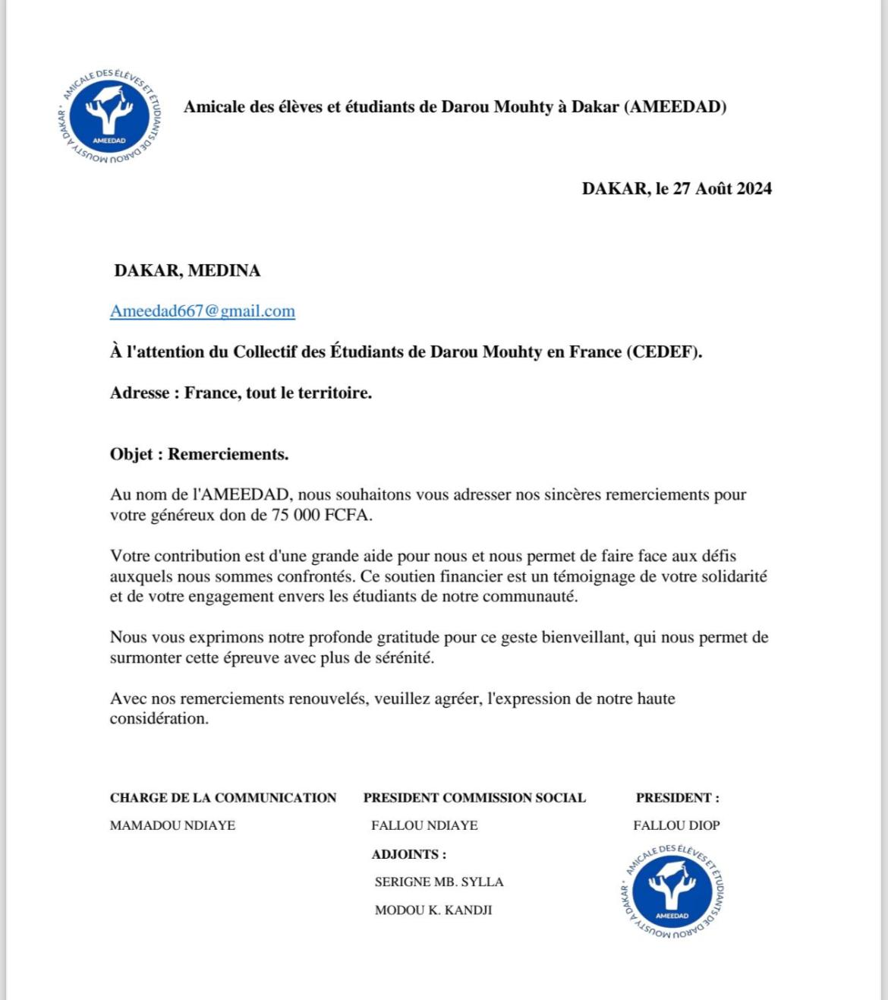

Campus France 2024/2025 avec le CEDEF
Nous lançons notre accompagnement annuel des étudiants et futurs étudiants de Darou Mouhty dans leurs démarches Campus France pour l’année 2024-2025.
Ce programme gratuit vous permettra de bénéficier d'un soutien personnalisé de la création de votre compte à la demande de visa.
Vous trouverez ci-joint les critères de sélection et les détails de l'accompagnement. Si vous êtes éligible ou connaissez quelqu'un qui pourrait l'être, n’hésitez pas à nous contacter.
Contactez-nous rapidement pour plus d’informations ! Places Limitées !
Actualités de CEDEF
Message de la présidente Tolla Diop adressé au nouveau bureau
Bonjour à tous
Je vous souhaite la bienvenue dans ce groupe, qui rassemble les membres du nouveau bureau du CEDEF pour l'année 2024/2025.
Ce groupe a été créé pour faciliter la communication et assurer le bon déroulement de nos activités.
Par ailleurs, je mettrai le lien du groupe dans la description, afin que les responsables des différentes commissions puissent y ajouter leurs membres restants.
Je vous prie également de bien vouloir me fournir la liste complète des membres de vos commissions respectives.
Cela nous permettra de constituer une liste complète des membres du bureau.
Enfin, je propose que nous organisions notre première réunion avant la fin du mois de septembre.
Je partagerai prochainement une liste des points à discuter. Je vous invite à me faire part de vos suggestions, recommandations ou propositions.
Nous fixerons ensuite une date pour cette réunion.
Merci d'avance pour votre collaboration.
Tolla DIOP
La Présidente
Renouvellement du Bureau
Le bureau de CEDEF est récemment renouvelé: Dimanche 21/07/2024.
La prise de poste du nouveau bureau est officielle le 01/09/2024.
La nouvelle présidente est Tolla Diop.
Le vice-président est Mame Mor Thiam.

Ouverture des classes
Le 2 septembre 2024 est la date de l'ouverture des classes en France. Le CEDEF souhaite une bonne rentrée à tous les étudiants. Le collectif est là pour vous accompagner dans toutes les démarches administratives.
Dans les trois zones A, B et C, la date de la prérentrée des enseignants a été fixée au 30 août 2024. Les élèves reprendront les cours à compter du lundi 2 septembre 2024. Le calendrier officiel diffusé par le ministère de l éducation national prévoit que les prochaines vacances d été commenceront le samedi 5 juillet 2025.
Assistance de l'AMEEDAD
Nous avons demandé l'assistance de CEDEF pour résoudre un problème de logement. Nous remercions le CEDEDF pour leur soutien précieux.
